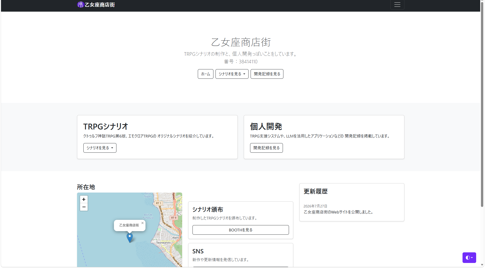

2026年7月27日
WebサイトをGitHub Pagesで公開しました
Bootstrapを使用して制作した「乙女座商店街」のWebサイトを、 GitHub Pagesで公開しました。

制作概要
今回、Bootstrapを使用したWebサイト制作の課題として、 TRPGシナリオや個人開発の記録を紹介するWebサイトを制作しました。 サイト名は「乙女座商店街」とし、自作したTRPGシナリオの紹介を 中心とした構成にしています。
制作したサイトはGitHubへアップロードし、 GitHub Pagesを利用してインターネット上に公開しました。
Webサイトの構成
Webサイトは、主に次のページから構成されています。
- サイトの概要を紹介するホームページ
- TRPGシステムごとのシナリオ一覧ページ
- シナリオごとの詳細ページ
- 制作したアプリケーションを紹介する個人開発ページ
- 制作過程を記録する開発ブログ
シナリオは「クトゥルフ神話TRPG第6版」と 「エモクロアTRPG」に分け、目的のシナリオを探しやすいようにしました。
使用した技術
- HTML
- ページの文章や画像、リンクなどの構造を作成しました。
- CSS
- ページの余白や画像サイズ、ホバー時の表示などを調整しました。
- Bootstrap
- ナビゲーション、ボタン、モーダル、グリッドなどに使用しました。
- Leaflet
- Access欄に地図を表示するために使用しました。
- GitHub Pages
- 作成した静的Webサイトの公開に使用しました。
工夫した点
シナリオをシステム別に整理
シナリオを一つのページにまとめるのではなく、 TRPGシステムごとに一覧ページを分けました。 ホーム画面の「シナリオを見る」にカーソルを合わせると、 システムを選択できるようにしています。
Bootstrapによるレスポンシブ対応
Bootstrapのグリッドシステムを使用し、 パソコンでは横並び、画面幅が狭い場合は縦並びになるようにしました。
CSSの共通化
各HTMLに記述していたCSSを外部の
style.cssへ移動しました。
これにより、複数ページのデザインを一括で変更できるようにしました。
GitHub Pagesでの公開
作成したHTML、CSS、画像などのファイルをGitHubのリポジトリへ アップロードしました。その後、リポジトリのPages設定から 公開するブランチとフォルダを指定しました。
- GitHubにリポジトリを作成する
- Webサイトのファイルをアップロードする
- SettingsからPagesを開く
- 公開元のブランチとフォルダを選択する
- 発行されたURLから表示を確認する
公開フォルダの先頭に
index.htmlを配置することで、
サイトのトップページとして表示されます。
苦労した点
最も苦労したのは、HTMLファイルや画像ファイルの相対パスです。 ローカル環境では表示されていても、GitHub Pagesへ公開すると 画像やCSSが表示されないことがありました。
パソコン内の絶対パスではなく、各HTMLファイルから見た 相対パスへ変更することで解決しました。
<img src="../image/stargazers-トレーラー.png">今後追加したい機能
現在はシナリオ紹介と開発記録を中心としたサイトですが、 今後は次のような機能を追加したいと考えています。
- 各シナリオの詳細ページの充実
- 開発記録の記事追加
- シナリオの検索・絞り込み機能
- スマートフォン表示の改善
- 制作したWebアプリケーションのデモ公開